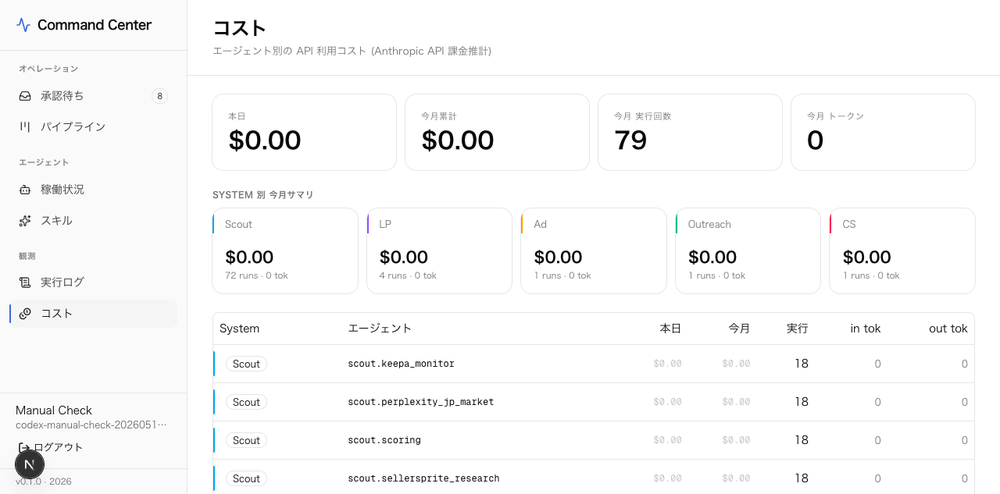

システム概要
何をするシステムか
Kickstarter・Indiegogo・BackerKit などの海外クラウドファンディングプラットフォームを自動監視し、日本市場で売れそうな物理商品を発見。スコアリング・ローカライズ・LP生成まで全自動で行います。
🔍
自動発見
14のRSS/API ソースから毎日2回、海外CF商品を自動収集
🎯
AI スコアリング
9軸評価で日本市場適合性をスコアリング。閾値以上のみ承認候補に
📝
自動ローカライズ
Makuake向けLP・薬機法チェック・FAQ・広告文・仕入れ交渉文を自動生成
パイプライン
スカウト4ステージの流れ
コスト最適化のため、安いモデルから順番にフィルタリング。最終的にSonnetでスコアリングされる商品は全体の約20-30%に絞られます。
Stage 0
ルールフィルター
無料
Stage 1
Haiku 事前フィルター
~$0.001/件
Stage 2
市場リサーチ
~$0.02/件
Stage 3
Sonnet スコアリング
~$0.03/件
Inbox
人間レビュー
承認/却下
各ステージの詳細
Stage 0 — ルールフィルター
求人投稿・記事・買収ニュース・政治系を正規表現で除外。APIコストゼロ。
求人投稿・記事・買収ニュース・政治系を正規表現で除外。APIコストゼロ。
Stage 1 — Haiku 事前フィルター
「輸入できるか」「物理商品か」「価格帯は適切か」をHaikuで高速判定。
「輸入できるか」「物理商品か」「価格帯は適切か」をHaikuで高速判定。
Stage 2 — 市場リサーチ（7日キャッシュ）
Haiku + web_search で競合・Makuake事例・規制リスクを調査。結果は7日間キャッシュ。
Haiku + web_search で競合・Makuake事例・規制リスクを調査。結果は7日間キャッシュ。
Stage 3 — 決定論的スコアリング
キャッシュ済み調査データのみを参照してSonnetがスコアリング。web検索なしで再現性100%。
キャッシュ済み調査データのみを参照してSonnetがスコアリング。web検索なしで再現性100%。
UI スクリーンショット
各画面の役割
Next.js で構築したウェブアプリ。Mac mini のローカルで動作し、ブラウザからアクセスします。
① ログイン画面

メールアドレス＋パスワード認証。
.env の APP_AUTH_EMAIL / APP_AUTH_PASSWORD で設定。② 承認待ち Inbox

AIがスコア70以上と判定した商品が並ぶ。「承認」で下流のLP・広告生成エージェントが起動。「却下」で自己学習の教師データになる。
③ 商品パイプライン

Scout → LP → Ad → Outreach → CS のステージ別カンバンビュー。各商品の進捗をリアルタイムで確認できる。
④ エージェント稼働状況

20以上のエージェントの稼働状態・24h実行数・一致率・平均応答時間を一覧表示。
⑤ 実行ログ

各エージェントの実行履歴。商品ごとのトークン数・コスト・処理時間を記録。デバッグにも使用。
⑥ コスト管理

エージェント別API利用コストを可視化。Scout・LP・Ad・Outreach・CS のシステム別サマリー。予算超過時はLarkに自動アラート。
AIエージェント一覧
各エージェントの役割
全エージェントはプロンプトのバージョン管理・スキルの着脱・実行履歴の記録に対応しています。
scout.prefilter
事前フィルター
Haiku で「日本輸入の可否」を高速判定。明らかな非対象品（ソフトウェア・廉価品・規制対象）を安価に除外。
scout.perplexity_jp_market
日本市場リサーチ
Haiku + web_search でAmazon JP・楽天・MakuakeなどのJP競合・CF事例・規制リスクを調査。結果を7日間キャッシュ。
scout.scoring
スコアリング
9軸（海外牽引力・クロスソース・国内CF事例・規制リスク・価格適合・新規性etc）でSonnetが評価。スコア≥0.7で承認候補。
lp.copy_writer
LPコピーライター
Makuake/GREEN FUNDING 特化のコピーライター。応援購入者の心理・問題→解決ストーリー構造・景表法準拠で執筆。
lp.compliance_checker
コンプライアンスチェック
薬機法・景表法・PSE・技適・食品衛生法・CF固有リスク（納期表現・返金保証）を網羅的にチェック。
lp.faq_generator
FAQ生成
先行予約の不安5点（届くか・品質・納期・サポート・規制）を必須項目として、CF支援者向けFAQを生成。
ad.headline_writer
広告見出しライター
Meta（Instagram/Facebook）とGoogle向けに分けた戦略で日本語広告文を生成。文字数制限・景表法NGワードを自動チェック。
outreach.message_drafter
仕入れ交渉メール
海外CF成功者への日本輸入権交渉メール（日英）を生成。Makuake実績・日本市場規模・収益分配モデルを提示。
スキルシステム
エージェントに着脱可能なプロンプトフラグメント
スキルは複数のエージェントに共有でき、DBから動的にシステムプロンプトに追加されます。

スキル例：国内市場リサーチ・海外市場リサーチ・競合分析・過去トレンド比較・FAQ生成・広告ヘッドライン・日本語LPコピー。
Phase 4 の自己学習で「scout.learned-patterns」スキルが自動生成・更新されます。
Phase 4 — 自己改善ループ
使うほど賢くなる仕組み
承認・却下の実績からパターンを自動学習し、次回以降のスコアリング精度を向上させます。
① 6:00
スカウト実行商品発見・スコアリング
→
② 日中
人間がInboxで承認 / 却下
→
③ 7:00翌日
Haikuがパターン分析「なぜ承認/却下か」
→
④ 自動
スキルDB更新「学習済みパターン」
→
⑤ 次回〜
パターンがスコアリングのsystem promptに自動注入
情報ソース
14のデータソースから自動収集
海外ソース（スカウト対象）
● Kicktraq Gadgets
● Kicktraq Product Design
● Kicktraq Hardware New
● Kicktraq Home New
● BackerKit New
● Yanko Design
● Reddit r/gadgets
● Reddit r/somethingimade...
● HackerNews Show HN
● Product Hunt
国内参照ソース（市場検証用）
● Makuake
● GREEN FUNDING
● CAMPFIRE
スケジュール
1日の自動実行タイムライン
06:00 — scout-cron
スカウト実行（14ソースから収集 → 4ステージフィルタリング → スコアリング）
完了後、高スコア商品をLarkに通知
07:00 — learn-cron
自己学習サイクル（直近90日の承認/却下パターンを分析）
「scout.learned-patterns」スキルをDBに自動更新
18:00 — scout-cron
スカウト実行（2回目）
7日キャッシュが有効な商品は研究フェーズをスキップ
19:00 — learn-cron
自己学習サイクル（2回目）
追加の承認/却下があれば即時スキル更新
コスト試算
月間 API 利用コスト見積もり
1日2回実行・1回あたり15商品処理・7日キャッシュ有効の場合。
※ プロンプトキャッシュ（2回目以降90%割引）・7日キャッシュ適用後の試算。実際のコストは
/cost 画面でリアルタイム確認可能。